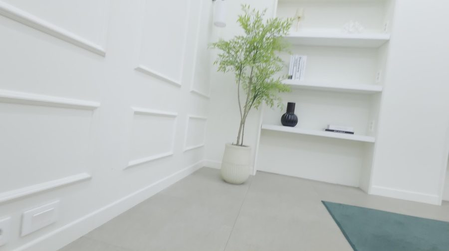
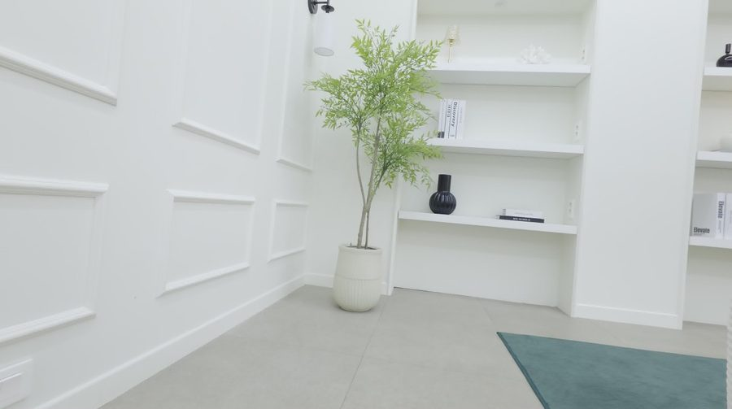
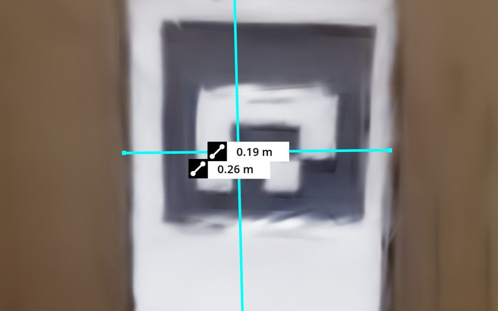
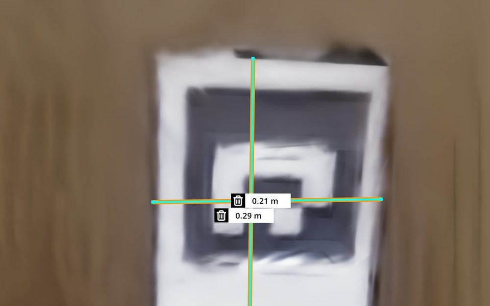

Real-to-Sim Assets
현장에서 촬영해 3D로 복원한 자료를 실측 스케일, 물리, 관절을 갖춘 시뮬레이션 자산으로 가공
- 역할
- 회사 업무, 장면·자산 가공과 검증 (로봇 제어·학습 개발은 범위 밖)
- 기간
- 2026.03 ~ 2026.09
- 결과
- 프레임 선택 방식을 바꿔 입력 선명도 +28% (28만 프레임 측정)
개요
복원 결과는 보기에는 그럴듯해도 그대로는 쓸 수 없음. 시뮬레이터에서 로봇이 쓰려면 크기, 형상, 물리 속성, 파일 구성이 모두 맞아야 하고, 다른 사람이 같은 결과를 다시 열 수 있어야 함
- 복원된 크기가 실제 공간과 다름
- 노이즈와 구멍, 천장이 내부 활용을 가림
- 참조 파일이 빠지면 다른 환경에서 열리지 않음
입력 프레임 고르기
고속 촬영 영상은 같은 1초 안에서도 흔들린 프레임과 선명한 프레임이 섞여 있음. 재구성에 넣을 프레임을 일정 간격 대신 구간마다 가장 선명한 것으로 고르는 방법을 실험
- 분석 범위
- 4K 120fps 영상 약 39분, 281,450 프레임을 1초 단위 2,346개 구간으로 나눠 측정
- 품질 편차
- 구간의 49%에서 같은 1초 안의 가장 선명한 프레임이 가장 흐린 프레임보다 2배 이상 선명
- 특징점
- 선명도와 특징점 수의 순위 상관 중앙값 0.753. 선명도로 고르면 특징점도 대체로 많음
- 예외
- 선명도가 고르게 높은 구간은 선명도로 가려지지 않아, 이런 구간은 특징점 수로 고르는 방식을 함께 설계
- 한계
- 고른 프레임으로 재구성 품질 자체가 좋아졌는지는 측정하지 못함. 입력 선명도까지만 확인
| 추출 방식 | 평균 선명도 | 균일 대비 |
|---|---|---|
| 균일: 구간 가운데 프레임 | 29.43 | 기준 |
| 무작위: 구간 안 아무 프레임 | 29.50 | +0.2% |
| 선명도 기준: 구간에서 가장 선명한 프레임 | 37.72 | +28.0% |


원본 보존과 참조
가공한 결과가 어디서 왔는지 끝까지 따라갈 수 있게, 원본은 손대지 않고 가공본이 원본을 참조하게 둠
- 원본 보존
- 복원 결과와 원본 촬영 자료는 그대로 보관하고, 가공은 사본에서 진행
- 참조 유지
- 편집한 메쉬는 원본 가우시안 자료의 참조를 유지한 채 이식
- 변경 보호
- 출력이 겹치면 멈추고, 원본을 교체하기 전에 백업. 관절을 망가뜨릴 수 있는 미러나 비정상 스케일은 차단
실측 기준 검증
복원된 크기는 실제와 달라서, 장면 안의 A4 용지를 기준으로 보정하고 좌표상 수치가 실제 크기와 맞는지 점검


- 표시 일치
- 확인용 물체의 그림자를 장면과 비교해 광원 각도를 맞추고, 천장 표시와 그림자를 받는 면을 확인
시뮬레이터 동작 확인
- 형상
- 노이즈와 구멍을 보정하고 천장을 분리해 내부를 쓸 수 있게 함. 형상을 지키면서 경량화
- 물리와 관절
- 고정할 부분과 회전할 부분을 나눠 연결하고, 회전축과 초기 자세가 맞는지 시뮬레이터에서 확인
- 충돌
- 물체가 관통하거나 입구에서 막히는 원인을 찾아 부품별로 충돌 형상을 나눠 적용
- 기록
- 수정 내용, 확인 결과, 남은 문제를 기록해 후속 담당자와 조정
전달과 재현성
받는 사람이 다른 환경에서 열어도 같은 결과가 나와야 전달이 끝난 것으로 봄
- 전달 패키지
- 진입 USD, 참조 USD, 텍스처, 가우시안 자료와 함께 수정 내용, 확인 결과, 남은 문제를 기록
- 재열기 확인
- 저장한 결과를 다시 열어 참조 파일이 모두 있는지, 표시와 동작이 그대로인지 점검
- 변환 도구
- 가우시안 자료를 시뮬레이터용 자산 형식으로 바꾸는 CPU 기반 변환 도구 구현
- 작업 가이드
- 수집부터 전달까지 단계별 입력, 산출물, 완료 기준을 오퍼레이터 가이드로 정리해 운용
- 사용처
- 경량화 자산을 로봇 학습 시연과 외부 납품용 장면에 사용
단계별 Python 도구
rescale.py # 실측 스케일 보정
patch_mesh.py # 편집 메쉬를 USD에 이식
add_physics.py # 물리, 충돌 설정
add_revolute_joint.py # 회전 관절 설정
compose_scene.py # 여러 자산을 장면으로 조합
package_deploy.py # 참조 파일을 포함한 배포용 ZIP